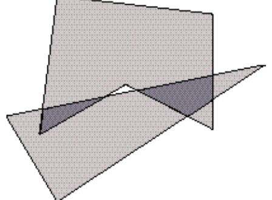

The 22nd Annual ACM International Collegiate Programming Contest World Finals · Problem F
Most drawing or illustration programs have simple tools for creating polygon objects. The better ones can find the regions that are the intersections of two polygons. The picture below shows two polygons, one is a pentagon and the other is a triangle. Their intersection consists of the two dark regions.

IBM has just hired you as a member of a programming team that will create a very sophisticated drawing/illustration program. Your task is to write the part of the program that deals with polygon intersections. Your boss has told you to delay work on the user interface and focus only on the geometric representations of the intersections.
A polygon in the Cartesian plane can be represented by a sequence of points that are its vertices. The vertices in the sequence appear in the order in which they are visited when traveling clockwise around the polygon’s boundary; so any two adjacent vertices in the sequence are the endpoints of a line segment that is one of the polygon’s sides. The last and the first vertices in the sequence are also endpoints of a side. Vertices are identified by their x- and y-coordinates. Assume the following about each polygon.
The intersection of two polygons consists of 0 or more connected regions. Your problem is to take two polygons and determine the regions of their intersection that are polygons satisfying the criteria above.
The input contains several data sets, each consisting of two polygons. Each polygon appears as a sequence of numbers:
n x₁ y₁ x₂ y₂ ... xₙ yₙ
where the integer n is the number of vertices of the polygon, and the real coordinates (x1,y1) through (xn, yn) are the boundary vertices. The end of input is indicated by two 0’s for the values of n. These two 0’s merely mark the end of data and should not be treated as an additional data set.
For each data set, your program should output its number (Data set 1, Data set 2, etc.), and the number of regions in the intersection of its two polygons. Label each region in the data set (Region 1, Region 2, etc.) and list its vertices in the order they appear when they are visited going either clockwise or counterclockwise around the boundary of the region. The first vertex printed should be the vertex with the smallest x-coordinate (to break ties, use the smallest y-coordinate). No region may include degenerate parts (consisting of adjacent sides whose angle of intersection is 0). If the three endpoints of two adjacent sides are collinear, the two sides should be merged into a single side. Print each vertex in the standard form (x,y), where x and y have two digits to the right of the decimal.
The following sample input contains exactly one data set. (The data set corresponds to the illustration at the beginning of this problem description.)
3 2 1 0.5 3.5 8 5 5 1.5 3 2 7 6.5 6.5 6.5 3.25 4 4.5 0 0
Data Set 1 Number of intersection regions: 2 Region 1:(1.50,3.00)(1.59,3.72)(3.25,4.05) Region 2:(4.43,4.29)(6.50,4.70)(6.50,4.00)(5.86,3.57)